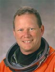

Lyndon B. Johnson Space Center
Houston, Texas 77058
|
National Aeronautics and Space Administration Lyndon B. Johnson Space Center Houston, Texas 77058 |
 |
Biographical Data |
||
DAVID M. BROWN (CAPTAIN, USN)
NASA ASTRONAUT (DECEASED)
PERSONAL DATA: Born April 16, 1956 in Arlington, Virginia. Single. Died on February 1, 2003 over the southern United States when Space Shuttle Columbia and the crew perished during entry, 16 minutes prior to scheduled landing. He is survived by his parents, Paul and Dorothy Brown. David enjoyed flying and bicycle touring. He was a four year collegiate varsity gymnast. While in college he performed in the Circus Kingdom as an acrobat, 7 foot unicyclist and stilt walker.
EDUCATION: Graduated from Yorktown High School, Arlington, Virginia, in 1974; received bachelor of science degree in biology from the College of William and Mary in 1978 and a doctorate in medicine from Eastern Virginia Medical School in 1982.
ORGANIZATIONS: Past President, International Association of Military Flight Surgeon Pilots. Associate Fellow, Aerospace Medical Association. Society of U.S. Naval Flight Surgeons.
AWARDS: Posthumously awarded the Congressional Space Medal of Honor, the NASA Space Flight Medal, the NASA Distinguished Service Medal, and the Defense Distinguished Service Medal (DDSM).
SPECIAL HONORS: Navy Operational Flight Surgeon of the Year in 1986, Meritorious Service Medal, Navy Achievement Medal.
EXPERIENCE: Brown joined the Navy after his internship at the Medical University of South Carolina. Upon completion of flight surgeon training in 1984, he reported to the Navy Branch Hospital in Adak, Alaska, as Director of Medical Services. He was then assigned to Carrier Airwing Fifteen which deployed aboard the USS Carl Vinson in the western Pacific. In 1988, he was the only flight surgeon in a ten year period to be chosen for pilot training. He was ultimately designated a naval aviator in 1990 in Beeville, Texas, ranking number one in his class. Brown was then sent for training and carrier qualification in the A-6E Intruder. In 1991 he reported to the Naval Strike Warfare Center in Fallon, Nevada, where he served as a Strike Leader Attack Training Syllabus Instructor and a Contingency Cell Planning Officer. Additionally, he was qualified in the F-18 Hornet and deployed from Japan in 1992 aboard the USS Independence flying the A-6E with VA-115. In 1995, he reported to the U.S. Naval Test Pilot School as their flight surgeon where he also flew the T-38 Talon.
Brown logged over 2,700 flight hours with 1,700 in high performance military aircraft. He was qualified as first pilot in NASA T-38 aircraft.
NASA EXPERIENCE: Selected by NASA in April 1996, Brown reported to the Johnson Space Center in August 1996. He completed two years of training and evaluation, and was qualified for flight assignment as a mission specialist. He was initially assigned to support payload development for the International Space Station, followed by the astronaut support team responsible for orbiter cockpit setup, crew strap-in, and landing recovery. Dave Brown flew aboard STS-107, logging 15 days, 22 hours, and 20 minutes in space.
SPACE FLIGHT EXPERIENCE: STS-107 Columbia (January 16 to February 1, 2003). The 16-day flight was a dedicated science and research mission. Working 24 hours a day, in two alternating shifts, the crew successfully conducted approximately 80 experiments. The STS-107 mission ended abruptly on February 1, 2003 when Space Shuttle Columbia and the crew perished during entry, 16 minutes before scheduled landing.
MAY 2004